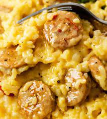

Rice and Sausage

Ingredients
- Sushi rice
- Field roast sausage
- butter
- water
Steps
- Add 1.5 cups rice and 2 cups water to stovetop pan.
- Allow to rest for 15 minutes
- While rice rests, cut sausage half lengthwise and widthwise.
- Heat rice to a boil, then immediately cover and reduce heat to low for 20 minutes
- While rice cooks, heat approx 1 tbsp butter over medium heat
- Add sausage to butter and cook until browned. Remove from heat
- Once rice is completed, fluff and plate with sausage.
- Enjoy